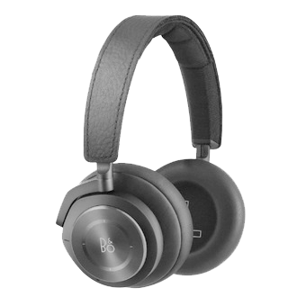
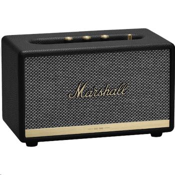
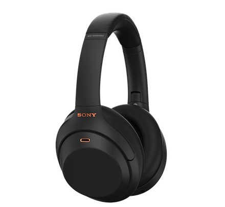
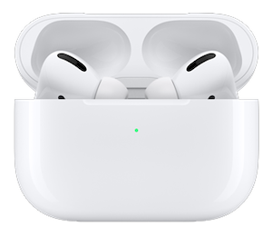

My Audio Equipments

뱅앤올룹슨 h9i
제가 개인적으로 제일 좋아하는 B&O사의 h9i 해드폰입니다.
디자인이 매우 고급스럽다고 생각이들고, 브랜드 자체를 좋아해서 쉬는 시간 종종 쓰는 것 같습니다.

뱅앤올룹슨 a8
B&O사의 a8 이어폰 모델입니다.
나온지 10년도 더 된 제품입니다. 디자인 자체도 독특하고 고급스럽다고 생각하고, 음질도 아직도 준수합니다.
제 첫 고가의 이어폰이라 애착이 가는 이어폰입니다.

마샬 스탠모더2
마샬의 블루투스 스피커 스탠모어2 입니다.
저는 스피커하면 무조건 마샬이라고 생각하는데, 디자인도 디자인인데 갬성 음질 모두를 갖춘 좋은 제품입니다.
산지 1년정도 되어 가는데, 아주 만족스럽습니다.

소니 wh 1000xm4
소니의 블루투스 해드폰입니다.
물론 앞에 나온 h9i 모델도 좋지만 노캔의 성능은 역시 소니가 최고라고 생각합니다. 음질 또한 아주 좋습니다.
현재 4개월정도 쓰고 있는데, 아주 좋은 해드폰이라고 생각합니다.

에어팟 프로
애플의 에어팟 프로 무선 이어폰입니다.
아마 이젠 안쓰는 사람을 찾기가 힘들 정도로 많이들 쓰시는데, 무선이라 확실히 편리하고 좋다고 생각합니다.
음질도 나쁘진 않지만 확실히 해드폰에 비해 여러 성능이 아쉽다고 느껴지긴 하네요.
그래도 편한건 못참는다고 생각합니다.
@dong_gunny